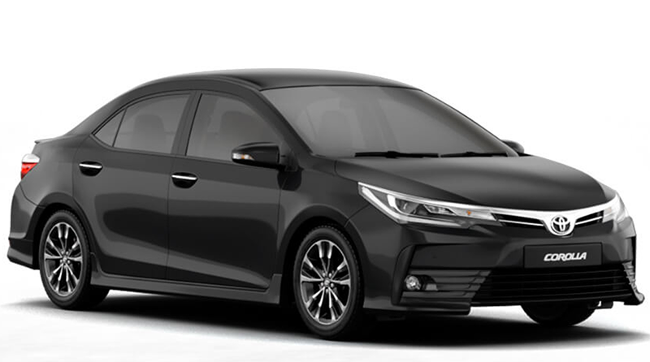

Toyota Corolla 2022
A Partir De R$127.000,00Para Mais informações:
Descrição do Carro
O Toyota Corolla 2022 combina confiabilidade e estilo com seu motor 2.0L eficiente e design moderno. Oferece conforto e tecnologia avançada, incluindo o pacote de segurança Toyota Safety Sense. Ideal para quem busca um sedã com alta performance e segurança.